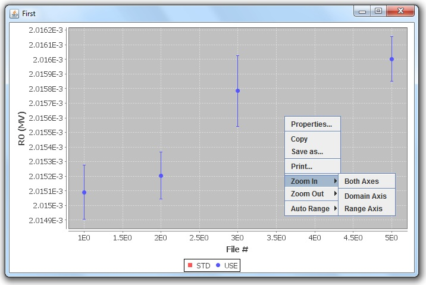
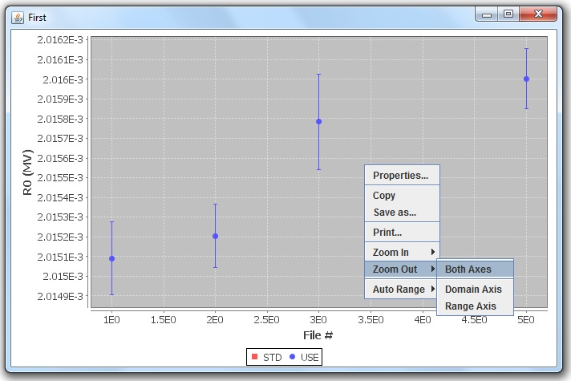

Step 1
To zoom in or out of the graph, right click on the graph and select the
appropriate function.

Step 2
Select the desired axis, or both.
Tip: To return to the default view, right click on the graph and select
the "Auto Range" function, followed by the desired axis.

Return to menu